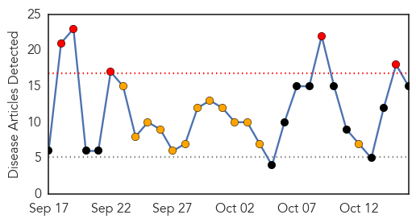

30 Day Trends
Web: 5 alerts, 13 warnings
Twitter: 2 alerts, 0 warnings
Top Articles:
- 0.995
- County officials urge public to get flu shot, take precautions in flu season
- 0.981
- DE 1st Case of Flu Diagnosed in Sussex Co.
- 0.959
- Tamiflu Prescription Could Help Treat the Flu
- 0.958
- Students get flu shot at Boise State
- 0.928
- Officials encourage flu vaccinations in Michigan
- 0.840
- Flu season around the corner: Ottawa Public Health
- 0.826
- A Future Ebola Solution? Scientists Discover First ‘Virological Penicillin’ in Chinese Herb
- 0.808
- Flu season arrives in London
- 0.729
- Eastern Michigan University vaccinating students for the flu
- 0.723
- Global Research - Centre for Research on Globalization
- 0.705
- Lawrence Wein: Five Disaster Scenarios — and What We Learn From Them
- 0.620
- Officials Encourage Flu Vaccinations in Michigan
- 0.616
- Officials encourage flu vaccinations in Michigan
- 0.588
- Foreign Affairs Chair: Ebola Nations Process Over 100 Visa Applications Daily
- 0.535
- Brian Sullivan: Flu crisis in 1918 was like no other
Top Tweets:
-
No tweets found for Oct 16, 2014
Web/News Articles
Tweets